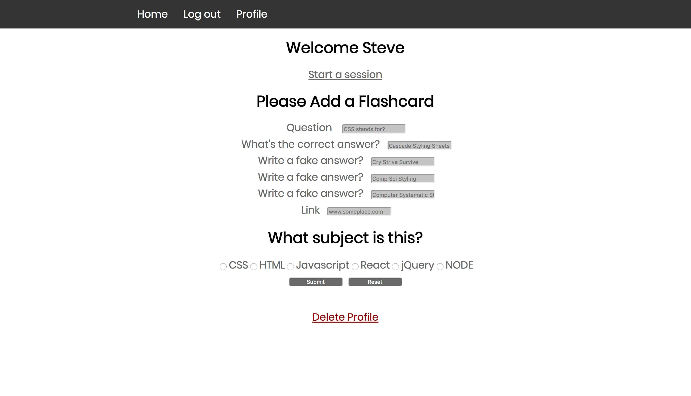

Hi, I’m Kyle. I build things, break them, and put them back together.
About Me
I’m an applied scientist who chose to pursue web development thanks to a passion for frustration.
FlashQuiz
Build a deck of flash cards or use what the community built without the busy styling featured on other study apps. The mobile first design and monochromatic theam were chosen to help me focus during my train commute.
Built With
- React
- Redux
- Node
- MongoDB
- Passport-JWT
- Enzyme
- Mocha
Wedding Gift-Exchange
A small gift exchange app built to help break the ice at my wedding. As people are coming from many different countries and cultures the app randomly matches people who agree to take part in the gift exchange.
Built With
- JavaScript
- jQuery
- Node
- MongoDB
- Passport
- Mocha
Wedding Event Guide
Weddings can be a logistical nightmare and if you wedding is a several day multiple location affair people will get the details confused. Faced with this problem I built an event guid for my wedding that sorts information by day giving location, time, event details, weather and directions.
Built With
- JavaScript
- jQuery
- AJAX
- Google Maps API
- OpenWeatherMap API